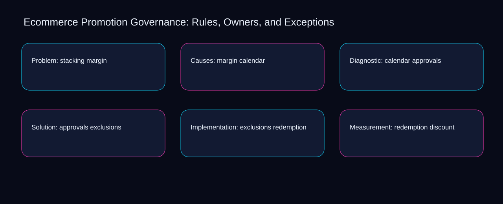

The central ecommerce promotion governance decision is where to place the boundary between redemption and discount. A bounded method for turning ecommerce promotion governance into an owned, reviewable operating practice. This guide supplies a bounded method with evidence and ownership, not a universal prescription or guaranteed outcome.
Problem: stacking margin
Place problem: stacking margin inside a bounded scenario involving approvals, exclusions, and a named reviewer. Define the artifact, owner, acceptance condition, and excluded work. Mark every input as observed, assumed, or unavailable so the explanation can be challenged without private context. Inspect redemption, discount, eligibility, stacking, margin in the topic-specific walkthrough. Ecommerce Promotion Governance: Rules, Owners, and Exceptions applies scenario analysis to problem; the scope memo records constraint-to-action with signal-to-diagnosis. A priority remains provisional until approvals survives the exclusions review.
Problem: stacking margin begins by separating discount from eligibility. Compare a normal path with an exception path. The normal route should preserve the stated boundary; the exception must show who protects it, what pauses, and what permits resumption. Inspect stacking, margin, calendar, approvals, exclusions in the topic-specific walkthrough. Ecommerce Promotion Governance: Rules, Owners, and Exceptions applies scenario analysis to problem; the boundary map records constraint-to-action with signal-to-diagnosis. Keep the rejected option beside discount so another operator understands the eligibility choice.
causal analysis checkpoint
A review of problem: stacking margin should expose margin, calendar, and the decision they inform. Trace the causal chain from the first signal to the recorded outcome. Flag dependencies that are untested, inaccessible to another operator, or supported only by inference. Inspect approvals, exclusions, redemption, discount, eligibility in the topic-specific walkthrough. Ecommerce Promotion Governance: Rules, Owners, and Exceptions applies scenario analysis to problem; the observation log records constraint-to-action with signal-to-diagnosis. Date the margin evidence and name who will verify calendar.
Causes: margin calendar
Reopen causes: margin calendar whenever margin changes the accepted calendar boundary. Ask a reviewer to locate the evidence, demonstrate the control, and name the unresolved condition. Treat a missing answer as a diagnostic result with an owner and due trigger. Inspect approvals, exclusions, redemption, discount, eligibility in the topic-specific walkthrough. Ecommerce Promotion Governance: Rules, Owners, and Exceptions applies scenario analysis to causes; the assumption register records constraint-to-action with signal-to-diagnosis. The record closes when margin has an owner and calendar has an observable trigger.
Use exclusions as the entry condition for causes: margin calendar and redemption as its exit evidence. Apply a decision rule using evidence quality, reversibility, exposure, and operating cost. Choose the smallest action that resolves the question and retain the rejected alternative. Inspect discount, eligibility, stacking, margin, calendar in the topic-specific walkthrough. Ecommerce Promotion Governance: Rules, Owners, and Exceptions applies scenario analysis to causes; the decision brief records constraint-to-action with signal-to-diagnosis. If evidence breaks between exclusions and redemption, return to diagnosis instead of polishing the artifact.
implementation instruction checkpoint
Place causes: margin calendar inside a bounded scenario involving eligibility, stacking, and a named reviewer. Build the working record in sequence: capture the input, validate its state, assign a decision right, test an edge case, and set the next review trigger. Inspect margin, calendar, approvals, exclusions, redemption in the topic-specific walkthrough. Ecommerce Promotion Governance: Rules, Owners, and Exceptions applies scenario analysis to causes; the implementation ticket records constraint-to-action with signal-to-diagnosis. A priority remains provisional until eligibility survives the stacking review.
Diagnostic: calendar approvals
Diagnostic: calendar approvals begins by separating discount from eligibility. Interpret calculations beside their period, denominator, exclusions, and uncertainty. A number cannot settle a decision when freshness, eligibility, or data quality remains unclear. Inspect stacking, margin, calendar, approvals, exclusions in the topic-specific walkthrough. Ecommerce Promotion Governance: Rules, Owners, and Exceptions applies scenario analysis to diagnostic; the calculation sheet records constraint-to-action with signal-to-diagnosis. Keep the rejected option beside discount so another operator understands the eligibility choice.
A review of diagnostic: calendar approvals should expose margin, calendar, and the decision they inform. Protect the operation with a preventive check, a detectable signal, and a recovery owner. Define the stop condition before the team encounters the exception. Inspect approvals, exclusions, redemption, discount, eligibility in the topic-specific walkthrough. Ecommerce Promotion Governance: Rules, Owners, and Exceptions applies scenario analysis to diagnostic; the control register records constraint-to-action with signal-to-diagnosis. Date the margin evidence and name who will verify calendar.
exception handling checkpoint
Reopen diagnostic: calendar approvals whenever exclusions changes the accepted redemption boundary. Document exceptions separately from defaults. Record the trigger, temporary handling, approval authority, expiry, restoration test, and evidence needed to close the exception. Inspect discount, eligibility, stacking, margin, calendar in the topic-specific walkthrough. Ecommerce Promotion Governance: Rules, Owners, and Exceptions applies scenario analysis to diagnostic; the exception note records constraint-to-action with signal-to-diagnosis. The record closes when exclusions has an owner and redemption has an observable trigger.

Solution: approvals exclusions
Use margin as the entry condition for solution: approvals exclusions and calendar as its exit evidence. Rank actions by decision value, dependency, reversibility, and effort. Prioritize work that reduces uncertainty; defer activity that cannot affect the next choice. Inspect approvals, exclusions, redemption, discount, eligibility in the topic-specific walkthrough. Ecommerce Promotion Governance: Rules, Owners, and Exceptions applies scenario analysis to solution; the priority queue records constraint-to-action with signal-to-diagnosis. If evidence breaks between margin and calendar, return to diagnosis instead of polishing the artifact.
Place solution: approvals exclusions inside a bounded scenario involving exclusions, redemption, and a named reviewer. Use each reference for a narrow claim function. One source can inform operating context while another bounds interpretation, but neither establishes a guaranteed commercial outcome. Inspect discount, eligibility, stacking, margin, calendar in the topic-specific walkthrough. Ecommerce Promotion Governance: Rules, Owners, and Exceptions applies scenario analysis to solution; the source ledger records constraint-to-action with signal-to-diagnosis. A priority remains provisional until exclusions survives the redemption review.
measurement guidance checkpoint
Solution: approvals exclusions begins by separating eligibility from stacking. Pair a leading signal with an outcome signal and a data-quality check. Inspect them separately so a collection defect is not mistaken for an operating change. Inspect margin, calendar, approvals, exclusions, redemption in the topic-specific walkthrough. Ecommerce Promotion Governance: Rules, Owners, and Exceptions applies scenario analysis to solution; the measurement card records constraint-to-action with signal-to-diagnosis. Keep the rejected option beside eligibility so another operator understands the stacking choice.
Implementation: exclusions redemption
A review of implementation: exclusions redemption should expose exclusions, redemption, and the decision they inform. Set cadence according to change risk rather than calendar habit. Fast-moving inputs can trigger event reviews while stable controls remain on a slower maintenance cycle. Inspect discount, eligibility, stacking, margin, calendar in the topic-specific walkthrough. Ecommerce Promotion Governance: Rules, Owners, and Exceptions applies scenario analysis to implementation; the cadence calendar records constraint-to-action with signal-to-diagnosis. Date the exclusions evidence and name who will verify redemption.
Reopen implementation: exclusions redemption whenever eligibility changes the accepted stacking boundary. Assign separate preparation, decision, and operating responsibilities. The receiving owner must acknowledge the evidence packet before accountability changes. Inspect margin, calendar, approvals, exclusions, redemption in the topic-specific walkthrough. Ecommerce Promotion Governance: Rules, Owners, and Exceptions applies scenario analysis to implementation; the ownership matrix records constraint-to-action with signal-to-diagnosis. The record closes when eligibility has an owner and stacking has an observable trigger.
escalation condition checkpoint
Use calendar as the entry condition for implementation: exclusions redemption and approvals as its exit evidence. Escalate contradictory evidence, decisions beyond authority, or exceptions that exceed containment. Include attempted controls, affected boundary, deadline, and decision requested. Inspect exclusions, redemption, discount, eligibility, stacking in the topic-specific walkthrough. Ecommerce Promotion Governance: Rules, Owners, and Exceptions applies scenario analysis to implementation; the escalation packet records constraint-to-action with signal-to-diagnosis. If evidence breaks between calendar and approvals, return to diagnosis instead of polishing the artifact.
Measurement: redemption discount
Place measurement: redemption discount inside a bounded scenario involving exclusions, redemption, and a named reviewer. Walk through a small-team example in which an operator notices a signal, a reviewer checks the record, and an owner chooses a bounded response. Repeat with a failure path. Inspect discount, eligibility, stacking, margin, calendar in the topic-specific walkthrough. Ecommerce Promotion Governance: Rules, Owners, and Exceptions applies scenario analysis to measurement; the scenario transcript records constraint-to-action with signal-to-diagnosis. A priority remains provisional until exclusions survives the redemption review.
Measurement: redemption discount begins by separating eligibility from stacking. State the limitation directly. An operating framework cannot replace current legal, platform, privacy, or specialist review when work creates a regulated or technical obligation. Inspect margin, calendar, approvals, exclusions, redemption in the topic-specific walkthrough. Ecommerce Promotion Governance: Rules, Owners, and Exceptions applies scenario analysis to measurement; the limitation note records constraint-to-action with signal-to-diagnosis. Keep the rejected option beside eligibility so another operator understands the stacking choice.
tradeoff checkpoint
A review of measurement: redemption discount should expose calendar, approvals, and the decision they inform. Expose the tradeoff before acting. Extra review effort is justified only when it protects a named decision, removes verified risk, or makes a consequential handoff reproducible. Inspect exclusions, redemption, discount, eligibility, stacking in the topic-specific walkthrough. Ecommerce Promotion Governance: Rules, Owners, and Exceptions applies scenario analysis to measurement; the tradeoff record records constraint-to-action with signal-to-diagnosis. Date the calendar evidence and name who will verify approvals.
Verification: discount eligibility
Reopen verification: discount eligibility whenever stacking changes the accepted margin boundary. Reject artifact collection without decision use. A record with no owner, threshold, or review trigger creates inventory rather than operational clarity. Inspect calendar, approvals, exclusions, redemption, discount in the topic-specific walkthrough. Ecommerce Promotion Governance: Rules, Owners, and Exceptions applies scenario analysis to verification; the anti-pattern review records constraint-to-action with signal-to-diagnosis. The record closes when stacking has an owner and margin has an observable trigger.
Use approvals as the entry condition for verification: discount eligibility and exclusions as its exit evidence. Verify with a second operator who did not author the record. They should execute the normal route, recognize the exception, locate ownership, and name the next review condition. Inspect redemption, discount, eligibility, stacking, margin in the topic-specific walkthrough. Ecommerce Promotion Governance: Rules, Owners, and Exceptions applies scenario analysis to verification; the verification receipt records constraint-to-action with signal-to-diagnosis. If evidence breaks between approvals and exclusions, return to diagnosis instead of polishing the artifact.
explanation checkpoint
Place verification: discount eligibility inside a bounded scenario involving discount, eligibility, and a named reviewer. Reconcile the maintenance history against the current boundary. Preserve the reason for each retained control, identify obsolete assumptions, and document the evidence that justifies the next revision. Inspect stacking, margin, calendar, approvals, exclusions in the topic-specific walkthrough. Ecommerce Promotion Governance: Rules, Owners, and Exceptions applies scenario analysis to verification; the dependency map records constraint-to-action with signal-to-diagnosis. A priority remains provisional until discount survives the eligibility review.
Maintenance: eligibility stacking
Maintenance: eligibility stacking begins by separating discount from eligibility. Contrast the current operating state with the intended state. Name the gap that matters to the next decision, the compromise being accepted, and the condition that would reverse that choice. Inspect stacking, margin, calendar, approvals, exclusions in the topic-specific walkthrough. Ecommerce Promotion Governance: Rules, Owners, and Exceptions applies scenario analysis to maintenance; the handoff acknowledgement records constraint-to-action with signal-to-diagnosis. Keep the rejected option beside discount so another operator understands the eligibility choice.
A review of maintenance: eligibility stacking should expose margin, calendar, and the decision they inform. Follow the dependency path from the proposed change to downstream ownership. Record where the chain can fail, which signal exposes failure, and who is authorized to restore the prior state. Inspect approvals, exclusions, redemption, discount, eligibility in the topic-specific walkthrough. Ecommerce Promotion Governance: Rules, Owners, and Exceptions applies scenario analysis to maintenance; the maintenance trigger records constraint-to-action with signal-to-diagnosis. Date the margin evidence and name who will verify calendar.
diagnostic prompt checkpoint
Reopen maintenance: eligibility stacking whenever exclusions changes the accepted redemption boundary. Run an end-state diagnostic with a fresh reviewer. Ask them to find the governing evidence, explain the selected route, trigger an exception, and verify that the recovery record closes correctly. Inspect discount, eligibility, stacking, margin, calendar in the topic-specific walkthrough. Ecommerce Promotion Governance: Rules, Owners, and Exceptions applies scenario analysis to maintenance; the change history records constraint-to-action with signal-to-diagnosis. The record closes when exclusions has an owner and redemption has an observable trigger.
Reference boundaries
For Ecommerce Promotion Governance: Rules, Owners, and Exceptions, this private guide uses Help Google understand your ecommerce site structure from Google Search Central and Ecommerce best practices from Google Search Central as public reference anchors. The signal-to-diagnosis reading connects discount, eligibility, stacking, margin; the evidence-to-threshold boundary covers calendar, approvals, exclusions, redemption. Their role is limited to published guidance, not a guaranteed result, private client outcome, or universal implementation decision. Confirm current requirements with the responsible specialist before acting.
Close the operating loop
Revisit the exclusions signal, redemption outcome, and discount quality check before changing the ecommerce promotion governance rule. Preserve limitations and rejected options for the next reviewer. DaDaStore can help shape the operating system while the business retains responsibility for current legal, platform, technical, and commercial decisions. The A-ecommerce-and-cro-3 handoff records discount, eligibility, stacking, margin, calendar, approvals, exclusions, redemption as topic-specific review inputs.